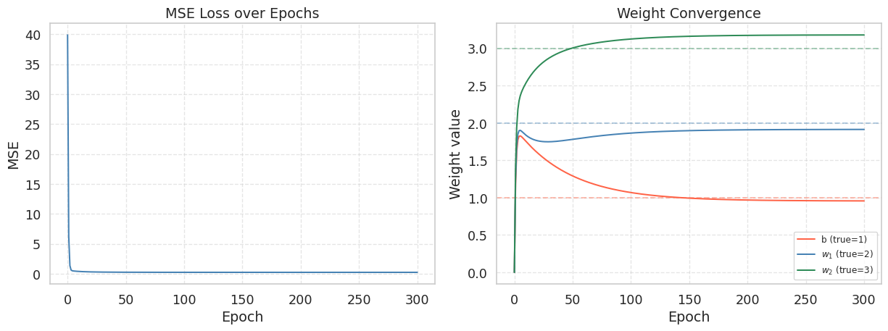
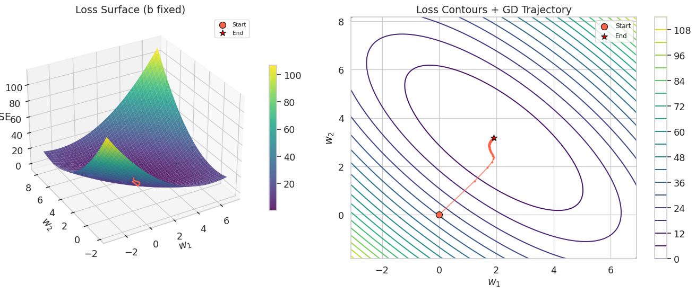
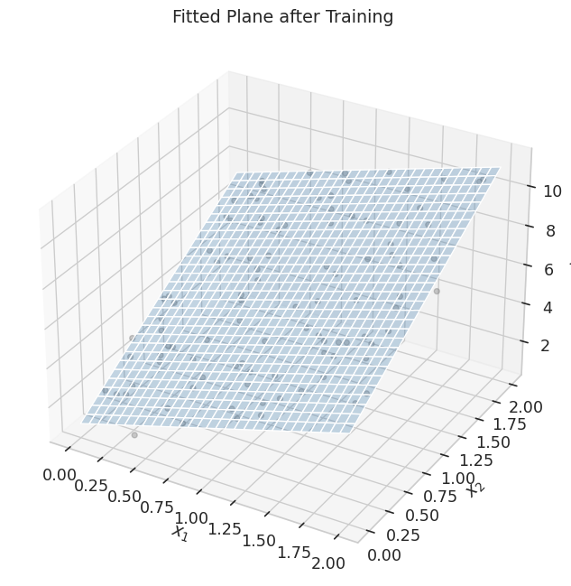
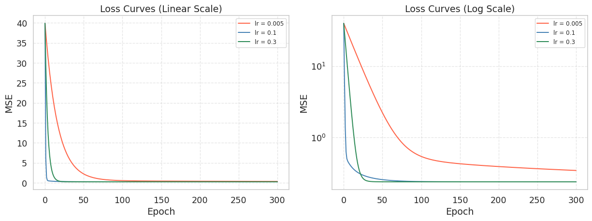

import numpy as np
import matplotlib.pyplot as plt
import seaborn as sns
sns.set_theme(style='whitegrid', font_scale=1.2)
np.random.seed(42)Lab2-1. Linear Regression via Gradient Descent

Objectives
- Understand the mathematical structure of gradient descent and translate it into NumPy code step by step.
- Implement linear regression using gradient descent and visualize how the fitted plane converges toward the data.
- Investigate the impact of different learning rates on convergence speed and numerical stability.
Background
Closed-Form Solution
Linear regression has an exact closed-form solution. For a single feature \(x\) with model \(\hat{y} = w_0 + w_1 x\), the optimal weights can be computed directly:
\[w_1 = \frac{\sum_{i=1}^{n}(x_i - \bar{x})(y_i - \bar{y})}{\sum_{i=1}^{n}(x_i - \bar{x})^2}, \qquad w_0 = \bar{y} - w_1 \bar{x}\]
This lab uses a two-feature model \(\hat{y}_i = w_1 x_{i1} + w_2 x_{i2} + b\). Collecting the parameters into \(\mathbf{w} = [b,\, w_1,\, w_2]^\top\) and prepending a column of ones to form the design matrix \(\mathbf{X} \in \mathbb{R}^{n \times 3}\), the closed-form solution is given by the Normal Equation:
\[\hat{\mathbf{w}} = (\mathbf{X}^\top \mathbf{X})^{-1} \mathbf{X}^\top \mathbf{y}\]
So why bother with gradient descent? The Normal Equation requires inverting a \(d \times d\) matrix, which costs \(O(d^3)\) time. When \(d\) (the number of features) reaches tens of thousands — as in image or text models — that inversion becomes completely infeasible. Gradient descent scales to any number of features and generalizes naturally to neural networks, where no closed form exists at all. Learning gradient descent on simple linear regression is the foundation for everything else in the course.
The Gradient Descent Update Rule
Given a differentiable loss function \(\mathcal{L}(\mathbf{w})\), the gradient \(\nabla_\mathbf{w} \mathcal{L}\) points in the direction of steepest increase. Moving in the opposite direction reduces the loss:
\[\mathbf{w}^{(t+1)} = \mathbf{w}^{(t)} - \eta \, \nabla_\mathbf{w} \mathcal{L}\!\left(\mathbf{w}^{(t)}\right)\]
where \(\eta > 0\) is called the learning rate (also written lr in code). This single equation is the core of nearly all modern machine learning optimization.
MSE Loss and Its Gradient
Throughout this lab we use a model with two features:
\[\hat{y}_i = w_1 x_{i1} + w_2 x_{i2} + b\]
Collecting parameters into \(\mathbf{w} = [b,\, w_1,\, w_2]^\top\) and prepending a column of ones to the data gives \(\hat{y}_i = \mathbf{w}^\top \mathbf{x}_i\). The Mean Squared Error (MSE) loss over \(n\) samples is:
\[\mathcal{L}_{\text{MSE}} = \frac{1}{n} \sum_{i=1}^{n} (\hat{y}_i - y_i)^2\]
Let \(r_i = \hat{y}_i - y_i\) denote the residual of sample \(i\). The partial derivatives are:
\[\frac{\partial \mathcal{L}}{\partial b} = \frac{2}{n} \sum_{i=1}^{n} r_i, \qquad \frac{\partial \mathcal{L}}{\partial w_1} = \frac{2}{n} \sum_{i=1}^{n} r_i \, x_{i1}, \qquad \frac{\partial \mathcal{L}}{\partial w_2} = \frac{2}{n} \sum_{i=1}^{n} r_i \, x_{i2}\]
Each partial derivative has the same pattern: the mean residual, weighted by the corresponding input feature (with the bias term using \(1\)). Stacking the three partial derivatives into a gradient vector gives:
\[\nabla_\mathbf{w} \mathcal{L} = \begin{bmatrix} \frac{\partial \mathcal{L}}{\partial b} \\[4pt] \frac{\partial \mathcal{L}}{\partial w_1} \\[4pt] \frac{\partial \mathcal{L}}{\partial w_2} \end{bmatrix} = \frac{2}{n} \begin{bmatrix} \sum_{i=1}^{n} r_i \cdot 1 \\[4pt] \sum_{i=1}^{n} r_i \, x_{i1} \\[4pt] \sum_{i=1}^{n} r_i \, x_{i2} \end{bmatrix}\]
Since the design matrix \(\mathbf{X}\) has rows \([1,\, x_{i1},\, x_{i2}]\), the column \(j\) of \(\mathbf{X}^\top\) contains the \(j\)-th feature values across all samples, so \(\mathbf{X}^\top \mathbf{r} = \bigl[\sum r_i \cdot 1,\; \sum r_i x_{i1},\; \sum r_i x_{i2}\bigr]^\top\). Substituting the residual vector \(\mathbf{r} = \mathbf{X}\mathbf{w} - \mathbf{y}\) yields the compact matrix form:
\[\nabla_\mathbf{w} \mathcal{L}_{\text{MSE}} = \frac{2}{n} \mathbf{X}^\top (\mathbf{X}\mathbf{w} - \mathbf{y})\]
0. Setup
1. Linear Regression via Gradient Descent
1.1 Generating Synthetic Data
We create a 2-feature regression dataset drawn from \(y = 1 + 2x_1 + 3x_2 + \varepsilon\), where \(\varepsilon \sim \mathcal{N}(0,\, 0.5^2)\). The true parameters are \(b=1\), \(w_1=2\), \(w_2=3\).
np.random.seed(42)
n = 100
x1 = np.random.uniform(0, 2, n)
x2 = np.random.uniform(0, 2, n)
y_data = 1 + 2 * x1 + 3 * x2 + 0.5 * np.random.randn(n)
# Build the design matrix: prepend a column of ones for the bias term
# X has shape (100, 3): each row is [1, x1_i, x2_i]
X = np.column_stack([np.ones(n), x1, x2])
print(f"X shape : {X.shape}") # (100, 3)
print(f"y_data shape: {y_data.shape}") # (100,)X shape : (100, 3)
y_data shape: (100,)The leading column of ones allows us to absorb the bias \(b\) into the weight vector \(\mathbf{w} = [b, w_1, w_2]^\top\), so the model becomes \(\hat{\mathbf{y}} = \mathbf{X}\mathbf{w}\) with no separate bias term in the code.
1.2 Implementing the Loss and Gradient
We implement the loss and gradient following the formulas from the Background section. Recall that for our model \(\hat{y}_i = w_1 x_{i1} + w_2 x_{i2} + b\), the residual of sample \(i\) is \(r_i = \hat{y}_i - y_i\), and the three partial derivatives are:
\[\frac{\partial \mathcal{L}}{\partial b} = \frac{2}{n} \sum r_i, \qquad \frac{\partial \mathcal{L}}{\partial w_1} = \frac{2}{n} \sum r_i \, x_{i1}, \qquad \frac{\partial \mathcal{L}}{\partial w_2} = \frac{2}{n} \sum r_i \, x_{i2}\]
We first implement this element-wise to see each step clearly, then show the equivalent matrix form.
def mse_loss(X, y, w):
"""
Compute the Mean Squared Error loss.
ŷ_i = b + w1*x_i1 + w2*x_i2
L = (1/n) * Σ (ŷ_i - y_i)²
"""
residuals = X @ w - y # r_i = b*1 + w1*x_i1 + w2*x_i2 - y_i
return float(np.mean(residuals ** 2))
def mse_gradient_elementwise(X, y, w):
"""
Compute each partial derivative separately.
X columns: [1, x1, x2], w: [b, w1, w2]
"""
n = len(y)
r = X @ w - y # residuals, shape (n,)
dL_db = (2.0 / n) * np.sum(r) # Σ r_i * 1
dL_dw1 = (2.0 / n) * np.sum(r * X[:, 1]) # Σ r_i * x_i1
dL_dw2 = (2.0 / n) * np.sum(r * X[:, 2]) # Σ r_i * x_i2
return np.array([dL_db, dL_dw1, dL_dw2])
def mse_gradient(X, y, w):
"""
Same result in one line using matrix multiplication.
(2/n) * X^T @ r computes all three partial derivatives at once.
"""
n = len(y)
residuals = X @ w - y
return (2.0 / n) * (X.T @ residuals)Let us verify that both implementations produce the same gradient:
w_init = np.zeros(3) # [b=0, w1=0, w2=0]
grad_elem = mse_gradient_elementwise(X, y_data, w_init)
grad_matrix = mse_gradient(X, y_data, w_init)
print(f"Initial MSE : {mse_loss(X, y_data, w_init):.4f}")
print(f"Gradient (element): dL/db={grad_elem[0]:.4f}, dL/dw1={grad_elem[1]:.4f}, dL/dw2={grad_elem[2]:.4f}")
print(f"Gradient (matrix) : dL/db={grad_matrix[0]:.4f}, dL/dw1={grad_matrix[1]:.4f}, dL/dw2={grad_matrix[2]:.4f}")
print(f"Match : {np.allclose(grad_elem, grad_matrix)}")Initial MSE : 39.8849
Gradient (element): dL/db=-11.8435, dL/dw1=-12.4044, dL/dw2=-13.9108
Gradient (matrix) : dL/db=-11.8435, dL/dw1=-12.4044, dL/dw2=-13.9108
Match : TrueThe gradient for \(w_1\) and \(w_2\) is large and positive, meaning these weights need to increase — exactly what we expect since the true values are 2 and 3 but we started at 0. The matrix form X.T @ r computes all three partial derivatives in a single operation, which is both faster and more concise.
1.3 Writing the Training Loop
The training loop applies the update rule at every epoch and records both the weights and the loss so we can inspect the full trajectory afterward.
def train_linear(X, y, lr=0.1, epochs=500):
"""
Full-batch gradient descent for linear regression.
Parameters
----------
lr : float -- learning rate (step size)
epochs : int -- number of full passes over the data
Returns
-------
w_history : ndarray of shape (epochs+1, d)
weights at every epoch, including the initial values
loss_history: list of float, length epochs+1
"""
w = np.zeros(X.shape[1])
w_history = [w.copy()]
loss_history = [mse_loss(X, y, w)]
for _ in range(epochs):
grad = mse_gradient(X, y, w)
w = w - lr * grad # gradient descent update
w_history.append(w.copy())
loss_history.append(mse_loss(X, y, w))
return np.array(w_history), loss_history
TipWhy
w.copy()?
NumPy arrays are mutable objects. Writing w_history.append(w) would append a reference to w, so every element in the list would point to the same array and reflect the final value of w. Calling .copy() creates a snapshot of the current values before the next update overwrites them.
1.4 Running the Optimizer
w_hist, loss_hist = train_linear(X, y_data, lr=0.1, epochs=300)
print(f"Initial loss : {loss_hist[0]:.4f}")
print(f"Final loss : {loss_hist[-1]:.4f}")
print(f"Learned b : {w_hist[-1, 0]:.4f} (true value: 1.0)")
print(f"Learned w_1 : {w_hist[-1, 1]:.4f} (true value: 2.0)")
print(f"Learned w_2 : {w_hist[-1, 2]:.4f} (true value: 3.0)")Initial loss : 39.8849
Final loss : 0.2364
Learned b : 0.9568 (true value: 1.0)
Learned w_1 : 1.9139 (true value: 2.0)
Learned w_2 : 3.1791 (true value: 3.0)The learned weights should be close to the true values, confirming that gradient descent successfully minimized the MSE.
1.5 Visualizing the Loss Curve and Weight Convergence
fig, axes = plt.subplots(1, 2, figsize=(13, 5))
# --- Left panel: loss curve ---
axes[0].plot(loss_hist, color='steelblue', lw=1.5)
axes[0].set_title("MSE Loss over Epochs")
axes[0].set_xlabel("Epoch")
axes[0].set_ylabel("MSE")
axes[0].grid(True, linestyle='--', alpha=0.5)
# --- Right panel: weight convergence ---
labels = ['b (true=1)', '$w_1$ (true=2)', '$w_2$ (true=3)']
colors = ['tomato', 'steelblue', 'seagreen']
true_vals = [1.0, 2.0, 3.0]
for j, (label, col, tv) in enumerate(zip(labels, colors, true_vals)):
axes[1].plot(w_hist[:, j], color=col, lw=1.5, label=label)
axes[1].axhline(tv, color=col, ls='--', alpha=0.4)
axes[1].set_title("Weight Convergence")
axes[1].set_xlabel("Epoch")
axes[1].set_ylabel("Weight value")
axes[1].legend(fontsize=9)
axes[1].grid(True, linestyle='--', alpha=0.5)
plt.tight_layout()
plt.show()
1.6 Loss Surface and Gradient Descent Trajectory
To visualize what gradient descent is doing geometrically, we plot the loss as a function of \(w_1\) and \(w_2\) while fixing the bias \(b\) at its optimal value. The resulting surface is a convex bowl — gradient descent rolls downhill from the initial point toward the minimum.
w_final = w_hist[-1]
# Fix b at the trained value, sweep w1 and w2
b_fixed = w_final[0]
w1_vals = np.linspace(w_final[1] - 5, w_final[1] + 5, 120)
w2_vals = np.linspace(w_final[2] - 5, w_final[2] + 5, 120)
W1, W2 = np.meshgrid(w1_vals, w2_vals)
Loss_grid = np.zeros_like(W1)
for i in range(W1.shape[0]):
for j in range(W1.shape[1]):
w_test = np.array([b_fixed, W1[i, j], W2[i, j]])
Loss_grid[i, j] = mse_loss(X, y_data, w_test)
fig = plt.figure(figsize=(15, 6))
# --- Left: 3D loss surface ---
ax3d = fig.add_subplot(121, projection='3d')
surf = ax3d.plot_surface(W1, W2, Loss_grid, cmap='viridis', alpha=0.85, linewidth=0)
# GD trajectory on the surface
traj_losses = [mse_loss(X, y_data, np.array([b_fixed, w_hist[i, 1], w_hist[i, 2]]))
for i in range(len(w_hist))]
ax3d.plot(w_hist[:, 1], w_hist[:, 2], traj_losses,
color='tomato', lw=2, zorder=10)
ax3d.scatter(w_hist[0, 1], w_hist[0, 2], traj_losses[0],
color='tomato', s=80, edgecolors='k', zorder=11, label='Start')
ax3d.scatter(w_hist[-1, 1], w_hist[-1, 2], traj_losses[-1],
color='red', s=80, edgecolors='k', marker='*', zorder=11, label='End')
ax3d.set_xlabel("$w_1$")
ax3d.set_ylabel("$w_2$")
ax3d.set_zlabel("MSE")
ax3d.set_title("Loss Surface (b fixed)")
ax3d.view_init(elev=30, azim=-120)
ax3d.legend(fontsize=8)
fig.colorbar(surf, ax=ax3d, shrink=0.6)
# --- Right: 2D contour + trajectory ---
ax2d = fig.add_subplot(122)
cont = ax2d.contour(W1, W2, Loss_grid, levels=20, cmap='viridis')
# GD trajectory
ax2d.plot(w_hist[:, 1], w_hist[:, 2], 'o-', color='tomato',
markersize=2, lw=1.2, alpha=0.8)
ax2d.scatter(w_hist[0, 1], w_hist[0, 2],
color='tomato', s=80, edgecolors='k', zorder=5, label='Start')
ax2d.scatter(w_hist[-1, 1], w_hist[-1, 2],
color='red', s=80, edgecolors='k', marker='*', zorder=5, label='End')
ax2d.set_xlabel("$w_1$")
ax2d.set_ylabel("$w_2$")
ax2d.set_title("Loss Contours + GD Trajectory")
ax2d.legend(fontsize=9)
fig.colorbar(cont, ax=ax2d)
plt.tight_layout()
plt.show()
The contour plot on the right shows the gradient descent trajectory as a path from the origin toward the minimum. Each step moves perpendicular to the contour lines (in the direction of steepest descent). The elliptical shape of the contours reflects the different scales and correlations between \(w_1\) and \(w_2\).
Note that this is a 2D slice of the full 3-dimensional parameter space (\(b\), \(w_1\), \(w_2\)). We fix \(b\) at its trained value to make the surface plottable, but during actual training \(b\) was also changing simultaneously. The trajectory shown is therefore an approximation — the true path lives in 3D and is projected onto this slice.
1.7 Visualizing the Fitted Plane
fig = plt.figure(figsize=(10, 7))
ax = fig.add_subplot(111, projection='3d')
# Scatter the data points
ax.scatter(x1, x2, y_data, alpha=0.4, color='gray', label='Data', s=20)
# Plot the fitted plane
x1_grid, x2_grid = np.meshgrid(np.linspace(0, 2, 30), np.linspace(0, 2, 30))
y_plane = w_final[0] + w_final[1] * x1_grid + w_final[2] * x2_grid
ax.plot_surface(x1_grid, x2_grid, y_plane, alpha=0.3, color='steelblue')
ax.set_xlabel("$x_1$")
ax.set_ylabel("$x_2$")
ax.set_zlabel("$y$")
ax.set_title("Fitted Plane after Training")
plt.tight_layout()
plt.show()
2. Effect of Learning Rate on Convergence
The learning rate \(\eta\) controls how large each update step is. Choosing the right value is critical: too small and training takes forever; too large and the updates overshoot, causing oscillation or divergence. We now compare three representative values.
learning_rates = [0.005, 0.1, 0.3]
lr_colors = ['tomato', 'steelblue', 'seagreen']
fig, axes = plt.subplots(1, 2, figsize=(13, 5))
for lr, col in zip(learning_rates, lr_colors):
_, lh = train_linear(X, y_data, lr=lr, epochs=300)
axes[0].plot(lh, color=col, label=f'lr = {lr}', lw=1.5)
axes[1].semilogy(lh, color=col, label=f'lr = {lr}', lw=1.5)
for ax in axes:
ax.set_xlabel("Epoch")
ax.set_ylabel("MSE")
ax.legend(fontsize=9)
ax.grid(True, linestyle='--', alpha=0.5)
axes[0].set_title("Loss Curves (Linear Scale)")
axes[1].set_title("Loss Curves (Log Scale)")
plt.tight_layout()
plt.show()
The log-scale plot on the right makes it easier to compare convergence speed across many orders of magnitude. A straight line on a log-scale plot indicates exponential decay, which is the ideal convergence behavior for gradient descent on a quadratic loss.
What you should observe:
lr = 0.005converges very slowly. After 300 epochs the loss is still far from its minimum.lr = 0.1hits the sweet spot. The loss drops steeply and levels off near the minimum.lr = 0.3converges quickly but the curve wiggles near the bottom, signaling that the step size is close to the stability threshold.
WarningWhat Happens When the Learning Rate Is Too Large?
Try setting lr = 0.8 or higher in the cell above. You will likely see the loss increase rather than decrease, or even produce nan values. This is called divergence.
The MSE loss is a parabola in \(w\), and the gradient gets steeper the farther you are from the minimum. If \(\eta\) is too large, one step carries you past the minimum and lands you on the opposite slope — which is even steeper than where you started. The next step then flies even farther, and so on. The loss does not oscillate around the minimum; it explodes.
When \(\eta\) is small enough, the opposite happens: as you approach the minimum the gradient shrinks toward zero, so the update size automatically becomes smaller even without changing \(\eta\). Gradient descent has a built-in braking mechanism — but only if the learning rate is small enough to let you get close in the first place.
If your model does not converge, the first thing to try is reducing the learning rate by a factor of 10.
Summary
- Gradient descent iteratively minimizes a loss by updating \(\mathbf{w} \leftarrow \mathbf{w} - \eta \nabla_\mathbf{w} \mathcal{L}\). This single rule underlies nearly all of modern ML optimization.
- For linear regression, the MSE gradient is \(\frac{2}{n}\mathbf{X}^\top(\mathbf{X}\mathbf{w} - \mathbf{y})\). Each component of the gradient is the mean residual weighted by the corresponding feature. The loss surface is a convex paraboloid, so gradient descent always converges to the global minimum (for a small enough learning rate).
- The learning rate is the most sensitive hyperparameter. A small \(\eta\) gives slow but stable convergence; a large \(\eta\) risks oscillation or divergence. Plotting the loss on a log scale is the clearest way to diagnose the behavior.
References
- Bishop, C. M. (2006). Pattern Recognition and Machine Learning. Springer.
- Goodfellow, I., Bengio, Y., and Courville, A. (2016). Deep Learning. MIT Press.